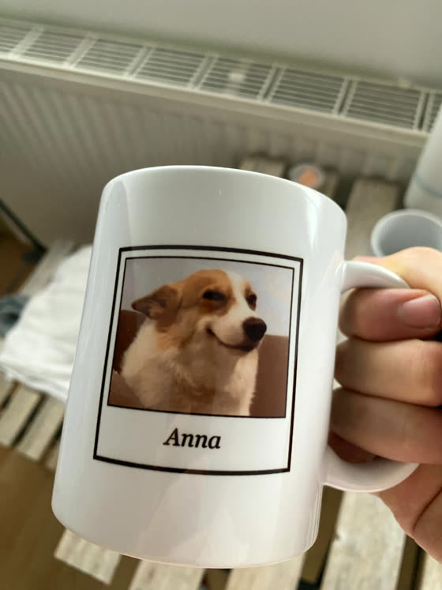
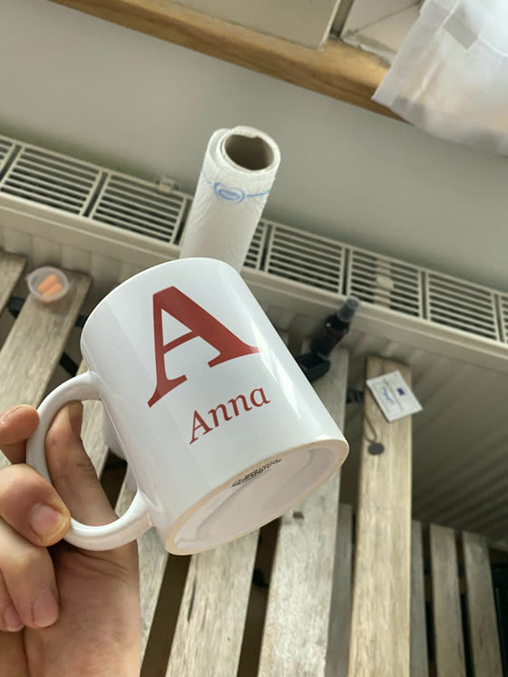
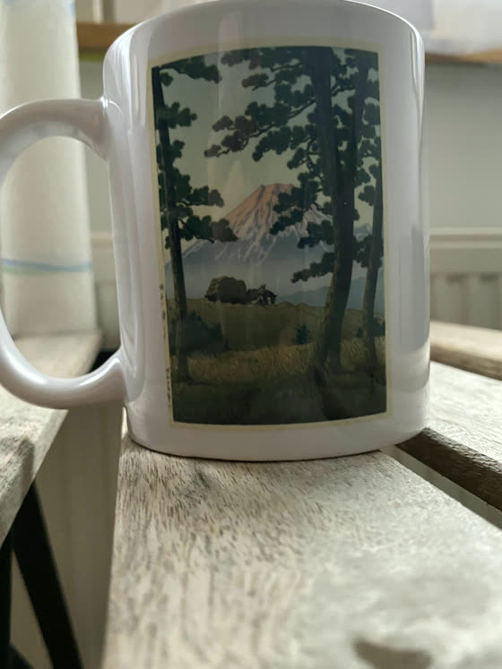
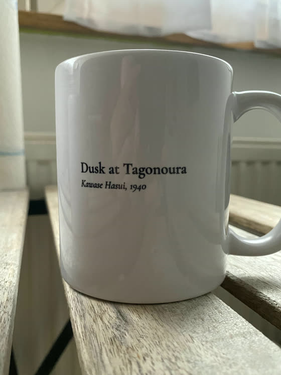

Von mir persönlich gedruckt
Personalisiere deine
eigene Tasse.
Ob Geburtstagsgeschenk, Weihnachtsgeschenk oder ein anderer Anlass. Vielleicht hast du auch einfach Lust auf deine eigene Tasse. Gestalten kannst du sie direkt hier im Browser, in meinem Tassen-Designer.
Kauf und Bezahlung laufen über meinen Etsy-Shop
Echte Tassen aus meiner Werkstatt




So geht’s
Drei Schritte von der Idee zur fertigen Tasse im Briefkasten.
Gestalten
Trag Name, Jahrgang und deinen Text im Designer ein, wähl ein Layout und speichere dein Bild.
Bestellen
Bestell deine Tasse in meinem Etsy-Shop. Dort läuft die ganze Kaufabwicklung.
Zuschicken
Schick mir dein Bild zur Bestellung. Ich drucke deine Tasse und verschicke sie versichert per DHL.
Was du bekommst
Für jeden Anlass
Fertige Layouts im Designer. Text und Farben passt du frei an.
Probier’s einfach aus
Der Designer läuft komplett in deinem Browser. Nichts wird hochgeladen, nichts gespeichert. Du siehst sofort, wie deine Tasse aussieht.
Jetzt Tasse gestalten →